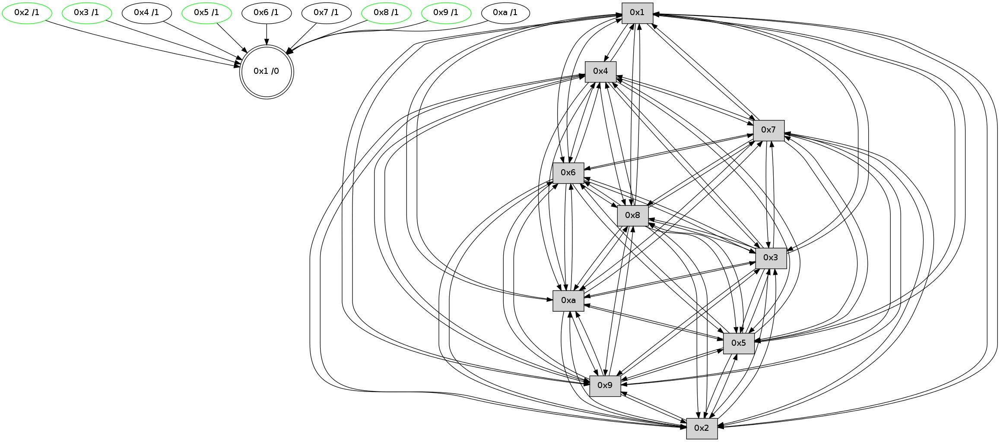

>> << IDX [start] -100 -25 -5 +0 +5 +25 +100 [480.400339127]
 Previous packets
475.001964 [Hello(6): seq=306 sym=2,3,5,4,7,9,8,10,1 sysInfo= stat=2:9,0,3,0/3:10,0,2,0/5:1,0,2,0/4:12,0,2,0/7:11,0,2,0/9:13,0,2,0/8:9,0,2,0/10:6,0,2,0/1:2,0,2,0]
475.004459 [STC(8)->1 #0.5 to-color d=1]
475.006315 [TreeStatus(3)-.->1 #0.5 stable child=1]
475.007494 [STC(6)->1 #0.5 to-color d=1]
----------------------------------------------------------------------
475.671552 beacon01(faad) #0 coord=01,02,03,04,05,06,07,0a,09,08 cycle=688.0ms assoc
-- color-indic=0 64 c0 05
475.681534 beacon02(faad) #0 coord=01,02,03,04,05,06,07,0a,09,08 cycle=688.0ms assoc 64 53 34
475.691536 beacon03(faad) #0 coord=01,02,03,04,05,06,07,0a,09,08 cycle=688.0ms assoc 64 29 79
475.701537 beacon04(faad) #0 coord=01,02,03,04,05,06,07,0a,09,08 cycle=688.0ms assoc 64 5e 93
475.711536 beacon05(faad) #0 coord=01,02,03,04,05,06,07,0a,09,08 cycle=688.0ms assoc 64 24 de
475.721535 beacon06(faad) #0 coord=01,02,03,04,05,06,07,0a,09,08 cycle=688.0ms assoc 64 aa 09
475.731535 beacon07(faad) #0 coord=01,02,03,04,05,06,07,0a,09,08 cycle=688.0ms assoc 64 d0 44
475.741539 beacon0a(faad) #0 coord=01,02,03,04,05,06,07,0a,09,08 cycle=688.0ms assoc 64 a1 4f
475.751540 beacon09(faad) #0 coord=01,02,03,04,05,06,07,0a,09,08 cycle=688.0ms assoc 64 2f 98
475.761541 beacon08(faad) #0 coord=01,02,03,04,05,06,07,0a,09,08 cycle=688.0ms assoc 64 55 d5
475.776811 [Hello(9): seq=250 sym=5,2,3,4,7,6,8,10,1 sysInfo= stat=5:5,0,1,1/2:15,0,2,0/3:9,0,2,1/4:9,0,1,1/7:15,0,4,0/6:9,0,4,0/8:10,0,3,0/10:3,0,1,0/1:11,0,3,0]
475.782226 [Hello(10): seq=239 sym=6,3,2,8,9,5,7,4,1 sysInfo= stat=6:3,0,4,0/3:15,0,2,1/2:9,0,1,1/8:8,0,4,0/9:0,0,0,0/5:6,0,3,1/7:9,0,3,0/4:1,0,1,0/1:5,0,4,0]
475.788466 [Hello(4): seq=307 sym=5,7,6,2,3,9,8,10,1 sysInfo= stat=5:12,0,3,1/7:11,0,3,0/6:1,0,3,0/2:1,0,0,0/3:5,0,3,1/9:1,0,2,0/8:11,0,4,0/10:10,0,1,0/1:1,0,5,0]
475.792299 [Hello(2): seq=304 sym=4,5,7,6,3,9,8,10,1 sysInfo= stat=4:9,0,2,0/5:8,0,3,1/7:7,0,3,0/6:13,0,3,0/3:3,0,3,1/9:12,0,2,0/8:3,0,4,0/10:6,0,2,0/1:15,0,4,0]
----------------------------------------------------------------------
476.459684 beacon01(faad) #0 coord=01,02,03,04,05,06,07,0a,09,08 cycle=688.0ms assoc
-- color-indic=0 64 04 0b
476.469665 beacon02(faad) #0 coord=01,02,03,04,05,06,07,0a,09,08 cycle=688.0ms assoc 64 97 3a
476.479665 beacon03(faad) #0 coord=01,02,03,04,05,06,07,0a,09,08 cycle=688.0ms assoc 64 ed 77
476.489667 beacon04(faad) #0 coord=01,02,03,04,05,06,07,0a,09,08 cycle=688.0ms assoc 64 9a 9d
476.499667 beacon05(faad) #0 coord=01,02,03,04,05,06,07,0a,09,08 cycle=688.0ms assoc 64 e0 d0
476.509666 beacon06(faad) #0 coord=01,02,03,04,05,06,07,0a,09,08 cycle=688.0ms assoc 64 6e 07
476.519667 beacon07(faad) #0 coord=01,02,03,04,05,06,07,0a,09,08 cycle=688.0ms assoc 64 14 4a
476.529670 beacon0a(faad) #0 coord=01,02,03,04,05,06,07,0a,09,08 cycle=688.0ms assoc 64 65 41
476.539671 beacon09(faad) #0 coord=01,02,03,04,05,06,07,0a,09,08 cycle=688.0ms assoc 64 eb 96
476.549672 beacon08(faad) #0 coord=01,02,03,04,05,06,07,0a,09,08 cycle=688.0ms assoc 64 91 db
476.561803 [Hello(6): seq=307 sym=2,3,5,4,7,9,8,10,1 sysInfo= stat=2:10,0,3,0/3:10,0,2,0/5:1,0,2,0/4:13,0,2,0/7:11,0,2,0/9:14,0,2,0/8:9,0,2,0/10:7,0,2,0/1:2,0,2,0]
476.564305 [Hello(7): seq=307 sym=2,3,5,6,4,8,9,10,1 sysInfo= stat=2:11,0,2,1/3:6,0,3,1/5:9,0,3,1/6:13,0,3,0/4:4,0,1,0/8:11,0,2,0/9:10,0,1,0/10:6,0,2,0/1:0,0,1,0]
476.567218 [Hello(1): seq=216 sym=4,2,9,5,10,3,8,6,7 sysInfo= stat=4:7,0,2,0/2:2,0,3,1/9:1,0,3,0/5:13,0,3,1/10:1,0,2,0/3:5,0,4,1/8:14,0,5,0/6:6,0,4,0/7:14,0,4,0]
----------------------------------------------------------------------
477.247816 beacon01(faad) #0 coord=01,02,03,04,05,06,07,0a,09,08 cycle=688.0ms assoc
-- color-indic=0 64 b8 0e
477.257798 beacon02(faad) #0 coord=01,02,03,04,05,06,07,0a,09,08 cycle=688.0ms assoc 64 2b 3f
477.267799 beacon03(faad) #0 coord=01,02,03,04,05,06,07,0a,09,08 cycle=688.0ms assoc 64 51 72
477.277800 beacon04(faad) #0 coord=01,02,03,04,05,06,07,0a,09,08 cycle=688.0ms assoc 64 26 98
477.287799 beacon05(faad) #0 coord=01,02,03,04,05,06,07,0a,09,08 cycle=688.0ms assoc 64 5c d5
477.297798 beacon06(faad) #0 coord=01,02,03,04,05,06,07,0a,09,08 cycle=688.0ms assoc 64 d2 02
477.307800 beacon07(faad) #0 coord=01,02,03,04,05,06,07,0a,09,08 cycle=688.0ms assoc 64 a8 4f
477.317805 beacon0a(faad) #0 coord=01,02,03,04,05,06,07,0a,09,08 cycle=688.0ms assoc 64 d9 44
477.327805 beacon09(faad) #0 coord=01,02,03,04,05,06,07,0a,09,08 cycle=688.0ms assoc 64 57 93
477.337805 beacon08(faad) #0 coord=01,02,03,04,05,06,07,0a,09,08 cycle=688.0ms assoc 64 2d de
477.348978 [Hello(8): seq=251 sym=5,2,3,4,7,6,9,10,1 sysInfo= stat=5:3,0,2,0/2:14,0,1,0/3:11,0,1,1/4:4,0,1,0/7:13,0,3,0/6:5,0,4,0/9:5,0,2,0/10:2,0,1,0/1:11,0,5,0]
477.351663 [Hello(2): seq=305 sym=4,5,7,6,3,9,8,10,1 sysInfo= stat=4:9,0,2,0/5:8,0,3,1/7:8,0,3,0/6:14,0,3,0/3:3,0,3,1/9:12,0,2,0/8:3,0,4,0/10:6,0,2,0/1:0,0,4,0]
477.354535 [Hello(3): seq=308 sym=1,7,6,2,4,8,9,10,5 sysInfo= stat=1:14,0,4,0/7:2,0,2,0/6:14,0,3,0/2:4,0,1,0/4:8,0,1,0/8:2,0,3,0/9:15,0,2,0/10:9,0,2,0/5:7,0,3,0]
477.358525 [Hello(10): seq=240 sym=6,3,2,8,9,5,7,4,1 sysInfo= stat=6:4,0,4,0/3:15,0,2,1/2:10,0,1,1/8:8,0,4,0/9:0,0,0,0/5:6,0,3,1/7:10,0,3,0/4:2,0,1,0/1:6,0,4,0]
477.363107 [Hello(4): seq=308 sym=5,7,6,2,3,9,8,10,1 sysInfo= stat=5:12,0,3,1/7:12,0,3,0/6:2,0,3,0/2:2,0,0,0/3:5,0,3,1/9:1,0,2,0/8:11,0,4,0/10:10,0,1,0/1:2,0,5,0]
477.367924 [Hello(9): seq=251 sym=5,2,3,4,7,6,8,10,1 sysInfo= stat=5:5,0,1,1/2:0,0,2,0/3:9,0,2,1/4:10,0,1,1/7:0,0,4,0/6:10,0,4,0/8:10,0,3,0/10:4,0,1,0/1:12,0,3,0]
----------------------------------------------------------------------
478.035947 beacon01(faad) #0 coord=01,02,03,04,05,06,07,0a,09,08 cycle=688.0ms assoc
-- color-indic=0 64 ac 60
478.045930 beacon02(faad) #0 coord=01,02,03,04,05,06,07,0a,09,08 cycle=688.0ms assoc 64 3f 51
478.055931 beacon03(faad) #0 coord=01,02,03,04,05,06,07,0a,09,08 cycle=688.0ms assoc 64 45 1c
478.065929 beacon04(faad) #0 coord=01,02,03,04,05,06,07,0a,09,08 cycle=688.0ms assoc 64 32 f6
478.075930 beacon05(faad) #0 coord=01,02,03,04,05,06,07,0a,09,08 cycle=688.0ms assoc 64 48 bb
478.085930 beacon06(faad) #0 coord=01,02,03,04,05,06,07,0a,09,08 cycle=688.0ms assoc 64 c6 6c
478.095930 beacon07(faad) #0 coord=01,02,03,04,05,06,07,0a,09,08 cycle=688.0ms assoc 64 bc 21
478.105936 beacon0a(faad) #0 coord=01,02,03,04,05,06,07,0a,09,08 cycle=688.0ms assoc 64 cd 2a
478.115936 beacon09(faad) #0 coord=01,02,03,04,05,06,07,0a,09,08 cycle=688.0ms assoc 64 43 fd
478.125936 beacon08(faad) #0 coord=01,02,03,04,05,06,07,0a,09,08 cycle=688.0ms assoc 64 39 b0
478.138055 [Hello(6): seq=308 sym=2,3,5,4,7,9,8,10,1 sysInfo= stat=2:11,0,3,0/3:11,0,2,0/5:1,0,2,0/4:14,0,2,0/7:12,0,2,0/9:15,0,2,0/8:10,0,2,0/10:8,0,2,0/1:3,0,2,0]
478.141182 PARSE ERROR************************
Traceback (most recent call last):
File "PacketAnalysis.py", line 167, in showOperaPacket
structPacket = OperaPacketParse.parsePacket(rawPacket)
File "../../pkg-python/HipSens/Core/OperaPacketParse.py", line 461, in parsePacket
return parseHelloMessage(data)
File "../../pkg-python/HipSens/Core/OperaPacketParse.py", line 127, in parseHelloMessage
assert struct.calcsize("H")*len(neighAddrList) == len(linkList)
AssertionError
48 34 01 00 00 d9 00 02 02 12 04 00 02 00 09 00 05 00 0a 00 03 00 08 00 06 00 07 00 53 04 00 00 00 00 4c 12 02 08 13 03 03 02 13 0d 02 02 14 06 05 0f 04 06 04 0e 4c 06
478.145280 [STC(1) #0.6 to-color d=0]
478.147617 [Hello(7): seq=308 sym=2,3,5,6,4,8,9,10,1 sysInfo= stat=2:12,0,2,1/3:7,0,3,1/5:9,0,3,1/6:13,0,3,0/4:5,0,1,0/8:12,0,2,0/9:11,0,1,0/10:7,0,2,0/1:1,0,1,0]
----------------------------------------------------------------------
478.824078 beacon01(faad) #0 coord=01,02,03,04,05,06,07,0a,09,08 cycle=688.0ms assoc
-- color-indic=0 64 10 65
478.834060 beacon02(faad) #0 coord=01,02,03,04,05,06,07,0a,09,08 cycle=688.0ms assoc 64 83 54
478.844062 beacon03(faad) #0 coord=01,02,03,04,05,06,07,0a,09,08 cycle=688.0ms assoc 64 f9 19
478.854062 beacon04(faad) #0 coord=01,02,03,04,05,06,07,0a,09,08 cycle=688.0ms assoc 64 8e f3
478.864061 beacon05(faad) #0 coord=01,02,03,04,05,06,07,0a,09,08 cycle=688.0ms assoc 64 f4 be
478.874060 beacon06(faad) #0 coord=01,02,03,04,05,06,07,0a,09,08 cycle=688.0ms assoc 64 7a 69
478.884060 beacon07(faad) #0 coord=01,02,03,04,05,06,07,0a,09,08 cycle=688.0ms assoc 64 00 24
478.894067 beacon0a(faad) #0 coord=01,02,03,04,05,06,07,0a,09,08 cycle=688.0ms assoc 64 71 2f
478.904066 beacon09(faad) #0 coord=01,02,03,04,05,06,07,0a,09,08 cycle=688.0ms assoc 64 ff f8
478.925830 [Hello(9): seq=252 sym=5,2,3,4,7,6,8,10,1 sysInfo= stat=5:5,0,1,1/2:0,0,2,0/3:9,0,2,1/4:10,0,1,1/7:1,0,4,0/6:11,0,4,0/8:10,0,3,0/10:4,0,1,0/1:13,0,4,0]
478.928463 [Hello(10): seq=241 sym=6,3,2,8,9,5,7,4,1 sysInfo= stat=6:5,0,4,0/3:15,0,2,1/2:10,0,1,1/8:8,0,4,0/9:1,0,0,0/5:6,0,3,1/7:11,0,3,0/4:3,0,1,0/1:7,0,5,0]
478.931511 [STC(6)->1 #0.6 to-color d=1]
478.932856 [Hello(4): seq=309 sym=5,7,6,2,3,9,8,10,1 sysInfo= stat=5:12,0,3,1/7:13,0,3,0/6:3,0,3,0/2:2,0,0,0/3:5,0,3,1/9:2,0,2,0/8:11,0,4,0/10:10,0,1,0/1:3,0,6,0]
478.938596 [STC(10)->1 #0.6 to-color d=1]
478.940736 [STC(8)->1 #0.6 stable,to-color d=1]
478.942199 [STC(9)->1 #0.6 stable,to-color d=1]
478.943833 [TreeStatus(4)-.->1 #0.6 stable child=1]
478.946070 [TreeStatus(9)-.->1 #0.6 stable child=1]
478.947678 [Hello(3): seq=309 sym=1,7,6,2,4,8,9,10,5 sysInfo= stat=1:15,0,5,0/7:3,0,2,0/6:15,0,3,0/2:4,0,1,0/4:9,0,1,0/8:2,0,3,0/9:0,0,2,0/10:10,0,2,0/5:7,0,3,0]
478.950215 [Hello(2): seq=306 sym=4,5,7,6,3,9,8,10,1 sysInfo= stat=4:10,0,2,0/5:8,0,3,1/7:9,0,3,0/6:15,0,3,0/3:4,0,3,1/9:13,0,2,0/8:3,0,4,0/10:7,0,2,0/1:1,0,5,0]
478.952700 [TreeStatus(8)-.->1 #0.6 stable child=1]
478.954603 [STC(3)->1 #0.6 stable,to-color d=1]
478.956266 [TreeStatus(3)-.->1 #0.6 stable child=1]
478.960162 [Hello(5): seq=309 sym=7,6,4,3,1,9,8,10,2 sysInfo= stat=7:10,0,2,0/6:15,0,4,0/4:3,0,0,0/3:7,0,1,1/1:4,0,5,0/9:4,0,2,0/8:8,0,3,0/10:15,0,0,0/2:4,0,0,0]
478.963956 [STC(5)->1 #0.6 stable,to-color d=1]
478.966442 [STC(2)->1 #0.6 stable,to-color d=1]
478.970015 [TreeStatus(2)-.->1 #0.6 stable child=1]
478.972561 [TreeStatus(5)-.->1 #0.6 stable child=1]
----------------------------------------------------------------------
479.612208 beacon01(faad) #0 coord=01,02,03,04,05,06,07,0a,09,08 cycle=688.0ms assoc
-- color-indic=0 64 d4 6b
479.622191 beacon02(faad) #0 coord=01,02,03,04,05,06,07,0a,09,08 cycle=688.0ms assoc 64 47 5a
479.632192 beacon03(faad) #0 coord=01,02,03,04,05,06,07,0a,09,08 cycle=688.0ms assoc 64 3d 17
479.642191 beacon04(faad) #0 coord=01,02,03,04,05,06,07,0a,09,08 cycle=688.0ms assoc 64 4a fd
479.652192 beacon05(faad) #0 coord=01,02,03,04,05,06,07,0a,09,08 cycle=688.0ms assoc 64 30 b0
479.662191 beacon06(faad) #0 coord=01,02,03,04,05,06,07,0a,09,08 cycle=688.0ms assoc 64 be 67
479.672193 beacon07(faad) #0 coord=01,02,03,04,05,06,07,0a,09,08 cycle=688.0ms assoc 64 c4 2a
479.682196 beacon0a(faad) #0 coord=01,02,03,04,05,06,07,0a,09,08 cycle=688.0ms assoc 64 b5 21
479.692196 beacon09(faad) #0 coord=01,02,03,04,05,06,07,0a,09,08 cycle=688.0ms assoc 64 3b f6
479.702196 beacon08(faad) #0 coord=01,02,03,04,05,06,07,0a,09,08 cycle=688.0ms assoc 64 41 bb
479.713387 [Hello(1): seq=218 sym=4,2,9,5,10,3,8,6,7 sysInfo= stat=4:9,0,3,1/2:4,0,4,2/9:3,0,4,1/5:14,0,4,2/10:3,0,3,0/3:7,0,5,2/8:15,0,6,1/6:6,0,5,0/7:15,0,4,0]
479.715866 [Hello(6): seq=309 sym=2,3,5,4,7,9,8,10,1 sysInfo= stat=2:12,0,4,1/3:12,0,3,1/5:2,0,3,1/4:15,0,2,1/7:13,0,2,0/9:15,0,3,1/8:11,0,3,1/10:8,0,3,0/1:4,0,3,0]
479.723538 [Hello(7): seq=309 sym=2,3,5,6,4,8,9,10,1 sysInfo= stat=2:13,0,3,2/3:8,0,4,2/5:10,0,4,2/6:13,0,4,0/4:6,0,1,1/8:13,0,3,1/9:12,0,2,1/10:8,0,3,0/1:1,0,1,0]